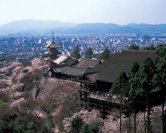

京都で最も拝観者の多い寺。平安京（京都）に都が移されて間もない798年に創建された。本堂は1633年の再建だが、10ｍ以上の欅の柱に支えられて断崖にそびえ立つ総檜板張りの舞台からは、京都の街を一望にできる。大きな決断をする時のたとえとして「清水の舞台から飛び降りる」と表現されるが、もちろん本当に飛び降りてはいけない。戻り
David Felipe Rico HernandezUniversidad Nacional de Colombia